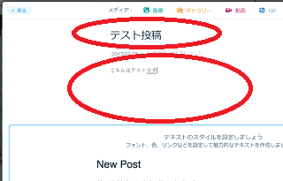

WIXでのブログの作り方
WIXはテンプレートがきれいなことで定評があり、個人ブログのほか、会社ホームページやネットショップを作成するのにも便利です。
海外サービスのため、日本の無料ブログとは少し仕様が異なりますが、以下の点に注意して作成していくとよいでしょう。
WIXでの作成手順について
まずは「アカウント」を取得してユーザー登録しますが、ひとつのアカウント内に複数のサイトをいくつでも作成することができます。
① アカウントの取得
メールアドレスでユーザー登録をしましょう。
「新規登録はこちら」の箇所から、メールアドレスとパスワードを入力して無料で登録することができます。
② ユーザー名の変更
デフォルトではメールアドレスの文字列が「ユーザー名」になりますが、このユーザー名はサイトのURLでも使用されることになります。
URL： ユーザー名.wixsite.com/サイト名
そのため、サイト内容と関連したシンプルな文字列のユーザー名に変更しておくことをおすすめします。
例えば、当サイトのようなブログ関連のハウツーサイトなら、ユーザー名を「blog」にして「blog.wixsite.com/サイト名」としたり、映画のレビューブログなら「movie」で「movie.wixsite.com/サイト名」にするといった感じです。
右上の箇所から「アカウント設定」へと進むと「ユーザー名」の変更をすることができます。
ただし、一般的な文字列のユーザー名はほぼ使用されているはずです。
すでに使用済みの場合、文字列を変更して何度かトライしてみるとよいでしょう。
③ サイト名の変更
上記のように、デフォルトでのサイトのURLには「ユーザー名」が使用されますが、さらに「サイト名」も使用されることになります。
URL： ユーザー名.wixsite.com/サイト名
こちらもデフォルトでは「mysite-1」などのような文字列になっていますので、コンテンツ内容に関連したサイト名を付けておくとよいでしょう。
例えば、映画のレビューブログならユーザー名を「movies」、サイト名を「review」にして「movie.wixsite.com/review」などとします。あるいはケーキのレシピブログならユーザー名を「cake」、サイト名を「recipe」にして「cake.wixsite.com/recipe」といった感じです。
この「サイト名」は「サイトを管理」の箇所から編集することができます。
サイト名を入力して変更しましょう。

これらのURLの設定については、検索エンジンに登録されてから変更してしまうと検索結果ではヒットしなくなりますので、一番最初のサイトの公開前に設定しておくことをおすすめします。
④ テンプレートの選択
テンプレートはジャンルごとに分類されてますので、作成するサイト内容に近いカテゴリを選択されるとよいでしょう。
このテンプレートの変更も後からはできませんので、最初の段階で慎重に選んでおく必要があります。もし後から変更する場合は、アカウント内に新しいサイトを追加して作り直すとよいでしょう。
⑤ テンプレートの編集
選択したテンプレートの「タイトル」の箇所などにデフォルトで記載されている文字を編集しましょう。
編集する箇所をクリックし、「テキスト編集」の箇所から変更することができます。
⑥ フォントや文字の大きさなどの変更
海外サービスのため、英文用フォントが使用されているテンプレートが多いです。違和感がある場合は、「フォント」の箇所から「メイリオ」などの日本語用フォントを設定して使用するとよいでしょう。
加えて、「スタイル」の箇所から文字の大きさなどを変更することができます。
終了したら、右上の箇所から編集内容を「保存」します。
⑦ サイトの変更後は「公開」が必要
サイト内容を「保存」しただけでは、実際のサイトには反映されません。変更を保存した後、実際のサイトで変更を反映させるには「公開」する必要があります。
⑧ ブログ記事の投稿
ブログの記事を更新する際には、ブログの箇所から新しいページを追加していきます。
記事のタイトルやコンテンツを入力して公開しましょう。

サイトのURLにアクセスすると記事が公開されているはずです。
また、デフォルトで投稿されている記事については削除してしまいましょう。
⑨ タイトルタグやメタタグの設定
この状態ではサイトのタイトルは変更されていますが、検索結果で表示されるための「タイトルタグ」や「メタタグ」の部分は変更されていません。このため、検索エンジン対策で好ましくないため、これらを変更する必要があります。
これは検索エンジン対策用の部分になりますので、実際のサイトには表示されない箇所です。
一般的にはHTMLを直接編集することになりますが、WIXではHTMLを編集する必要はなく、「ページSEO」の箇所に入力することで編集することができます。
左上のページメニューの箇所から「ページSEO」を選択して、タイトル名などを入力して設定することができます。
ページタイトルや説明分の部分などを入力します。

サイトのトップページと同様、記事ページについても、投稿画面の右側にある「SEO設定」の箇所から入力することができます。
⑩ HTMLソースの確認方法
Wixで作成したサイトでは、検索エンジンがサイトのコードを正しく読み取れるように「AJAX クロール」が使用されています。そのため、通常の右クリックではHTMLソースを確認することができません。
サイトのHTMLソースを確認する場合、ページURLの最後に
「?_escaped_fragment_=」
を追加することで見ることができます。
プレミアムプランで独自ドメインの設定が可能
デフォルトで提供されるURLについては、サブドメインの「ユーザー名.wixsite.com」でアクセスしてもサイトは表示されません。
「サイト名」までを含めた「ユーザー名.wixsite.com/サイト名」がデフォルトのURLになります。
これはアカウント内に複数のサイトを作成する際、サイト名の部分を変更するだけで済むので便利です。
URL： ユーザー名.wixsite.com/サイト１
URL： ユーザー名.wixsite.com/サイト２
URL： ユーザー名.wixsite.com/サイト３
このように複数のサイトを作成した場合、マイサイトの箇所にサイトの一覧が表示されているはずです。
一方で、URLが複雑でごちゃごちゃしてしまいますので、シンプルなURLがよい場合は、有料のプレミアムプランで独自ドメインの設定を検討されることをおすすめします。
独自ドメインを設定すると、一般的な www.example.com などのすっきりしたURLを使用することができます。特に、会社のホームページなどをWIXで作成する場合には、独自ドメインでサイトを作成することをおすすめします。
ちなみに、複数のサイトにそれぞれ別の独自ドメインを設定する場合、サイトごとにプレミアムプランにアップグレードする必要があるので注意しましょう。